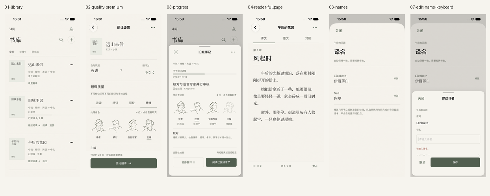

iOS 开发进度
纸面界面与翻译准备修正已实现。最新翻译 mock 回归与一次 DeepSeek 短文 SSE、保存重载验证通过；旧任务与用户数据保留。
四档流程通过 mock，速读真实 API 跑通
核心 174 项、相关原生 mock 15 项通过；真实测试默认跳过。显式启用后仅发送一次 DeepSeek Flash 请求，短文流式翻译、完成检查、保存与重载通过，重载不重发。新增连接使用 Flash，显式关闭其默认思考；保留已保存模型。
真实用例合计 3.631 秒，包含翻译和持久化检查；输出上限 128 tokens，准确总用量未取得。另外三档、长文耗时与真实译质尚未实测。密钥临时文件已删除，正常 Keychain 与书库未改。
已完成
- 书库与导入保护文字导入入口、本机粘贴草稿恢复、失败保留、稳定 ID 入库去重。
- 设置、费用与商品档位用途与风格前置；权益、另收费和服务不可用明确，商品重试与 API 保存保护。
- 本书进度与译名前台／后台行为解释、真实暂停状态；完整生效说明，保留旧任务和冻结请求。
- 阅读与导出全屏阅读返回原进度、完整目录；全书／当前章／指定章节，终稿快照与五格式回读。
- 原生布局窄屏布局、最大辅助字号和键盘回归；iPad 横竖屏、居中内容与表单。人工无障碍复验尚待完成。
10 月 10 日历史验证
| 项目 | 结果 |
|---|---|
| TranslationCore | 142 项通过 |
| 原生 App 单测 | 46 项通过 |
| iPhone / iPad UI 测试 | 12 + 1 条通过 |
| Debug / Release 模拟器构建 | 通过 |
本轮共 201 项独立用例，相关复测不重复计数。10 月 9 日历史 160 项另存。完整设备截图和指定宽度布局快照分别标注。
本页是静态进度记录，后续代码变化需重新验证。
输入可恢复，下一步与范围更清楚
粘贴草稿自动保存在本机；商品与保存失败可恢复；目录展示全部已知章节；导出明确全书、当前章和指定章节。阅读全屏返回原进度，译名保存前显示生效边界，iPad 内容居中。
查看实施报告与最新原生前后截图 · 原始审查。正常 App 已重新启动并保留原书库；真实服务和人工无障碍项目单独标注。
完整请求预算与更合理的上下文边界
自带 API 可设置窗口与输出 tokens，完整消息预检自动收缩背景，明确容量拒绝后继续缩减；必需正文过大时保留并提示。小说局部表格不改变章节，论文步骤与缩写不再产生微小分块，精修首译补齐小说上下文并减少重复输入。
最新核心 171 项、App 55 项、相关 iPhone UI 2 条通过，共 228 项；复测不重复计数，增量 Debug 构建通过。旧任务保持原分块与请求组装。预算采用估算，在线模型与实际译质未验证；云端预算仍由既有服务处理。

减少每次启动的等待
SwiftUI 预览 → 按需增量 Debug 构建 → 复用已启动的模拟器
只想试用、代码未变且已安装最新版本时，直接启动 App。完整测试与 Release 构建用于对应验收；持续慢时分别测量编译、安装和首屏耗时。
尚待验证
- 外部服务与真机真实 Apple 登录、支付、发布／购买交易和真机仍未验证；在线模型已完成速读短文验证，长文、多轮耗时与译质仍待实测。
- 完整导入与 OCR 流程各格式通过系统选择器导入、扫描／混合 PDF 的完整交互仍有验证缺口。
- 人工原生体验末段 Mac 锁定；本轮完整 VoiceOver、减少动态效果实操、iPad 分屏及最终桌面原生窗口可见性尚待复验。历史检查不计作本轮通过。
- 观察项与启动性能仍有未定位的 frame dimension 运行时警告，未观察到流程阻断；尚无分阶段启动耗时数据。
10 月 10 日追加：操作与视觉细节
首次阅读／继续翻译动作更明确；语言行对齐，API 字段补中文，设置表单统一纸底；介绍可关闭且复看不改模式，目录说明可读，导出范围与格式标签常驻。
本次聚焦回归 16 项独立用例通过（14 iPhone UI、1 iPad UI、1 布局测试），Debug 构建通过。此前 201 项为上一轮结果，未在本次全部重跑。横屏旋转过渡截图已剔除，稳定横屏、真实服务和完整无障碍仍有缺口。
原生证据与协作约定

查看测试复现命令
cd ios/Packages/TranslationCore
swift test# 在仓库根目录；按实际设备修改 destination
xcodebuild -project ios/BookLLM.xcodeproj -scheme BookLLM \
-configuration Debug -destination 'platform=iOS Simulator,name=iPhone 17e' \
-collect-test-diagnostics never CODE_SIGNING_ALLOWED=NO test